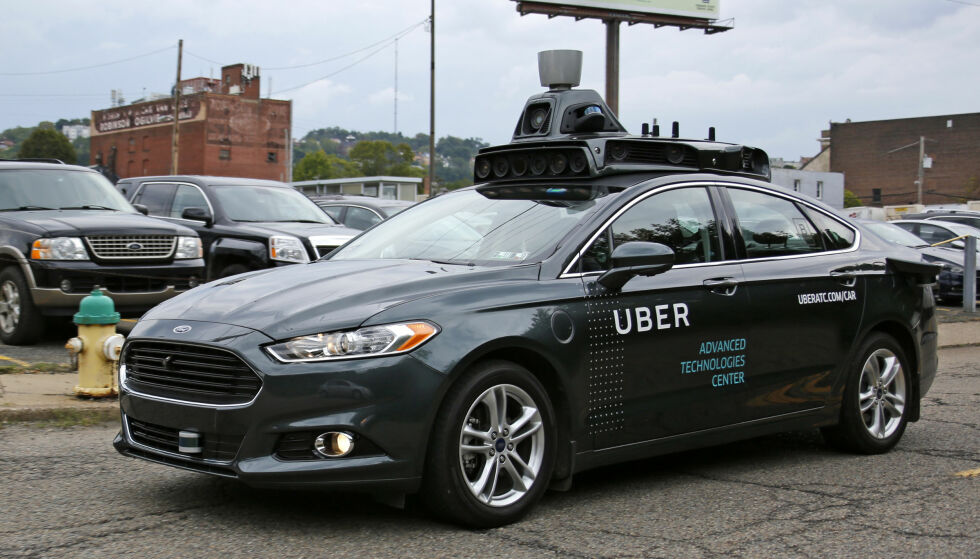

What is a Server
Imagine you have a magical computer that can learn things on its own, just like how you learn new things every day. This special computer is called a server in machine learning. The server is like a big brain that can store a lot of information and use it to solve problems. It can learn from examples and make predictions. For example, if you show the server pictures of different animals, it can learn to recognize them and tell you if it's a cat, a dog, or something else. The server needs a lot of power to do all this thinking and learning, just like how your brain needs energy to think and learn. It has special parts called processors that help it process information quickly. Think of these processors as the muscles of the server. Sometimes, the server needs more power to solve really big problems or learn from a lot of data. In those cases, it can have extra processors called GPUs. GPUs are like supercharged muscles that help the server learn even faster. The server can also talk to other computers or devices. It can share what it has learned or help other computers make decisions. It does this by sending information over the internet, just like how you can talk to your friends using a phone or a computer.
Avantages of Having AI
AI can enhance productivity by automating repetitive tasks, allowing creative professionals to focus on more complex and innovative aspects of their work. AI can provide data-driven insights by analyzing large amounts of data, which can inform creative decisions and strategies. AI algorithms can analyze user preferences and behaviors to deliver personalized creative content and experiences, thus improving personalization. AI can facilitate collaboration between humans and machines, enabling new forms of creative expression and problem-solving. AI tools and technologies can augment human creativity by providing suggestions, generating ideas, and expanding creative possibilities. AI can streamline creative workflows, reduce production time, and lower costs associated with creative projects, thus improving efficiency and cost-effectiveness. AI systems can learn from user feedback and adapt their creative outputs over time, leading to continuous improvement and refinement of creative processes.HOW AI can Improve our Job experiences
Automation: AI can automate repetitive and mundane tasks, allowing employees to focus on more meaningful and creative work. This can reduce boredom and increase job satisfaction. Personalization: AI can analyze individual preferences and behaviors to provide personalized recommendations and experiences. This can make work more enjoyable by tailoring it to each employee's interests and needs. Decision-making support: AI can provide data-driven insights and recommendations to assist employees in making better decisions. This can reduce stress and improve job performance. Enhanced productivity: AI-powered tools and systems can streamline workflows, improve efficiency, and help employees accomplish tasks more quickly. This can reduce workloads and create a more positive work environment. Skill development: AI can provide personalized training and learning opportunities, helping employees acquire new skills and grow professionally. This can make work more engaging and rewarding. Overall, AI has the potential to transform job experiences by automating mundane tasks, personalizing experiences, supporting decision-making, enhancing productivity, and facilitating skill development.How AI is helping saving live
AI can improve job experiences and make them more enjoyable in several ways: Automation: AI can automate repetitive and mundane tasks, allowing employees to focus on more meaningful and creative work. This can reduce boredom and increase job satisfaction. Personalization: AI can analyze individual preferences and behaviors to provide personalized recommendations and experiences. This can make work more enjoyable by tailoring it to each employee's interests and needs. Decision-making support: AI can provide data-driven insights and recommendations to assist employees in making better decisions. This can reduce stress and improve job performance. Enhanced productivity: AI-powered tools and systems can streamline workflows, improve efficiency, and help employees accomplish tasks more quickly. This can reduce workloads and create a more positive work environment. Skill development: AI can provide personalized training and learning opportunities, helping employees acquire new skills and grow professionally. This can make work more engaging and rewarding. Overall, AI has the potential to transform job experiences by automating mundane tasks, personalizing experiences, supporting decision-making, enhancing productivity, and facilitating skill development.
